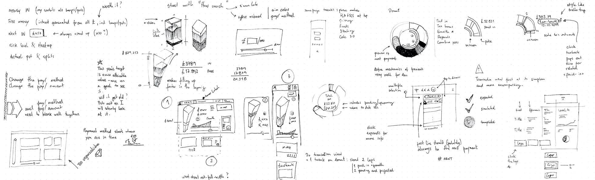
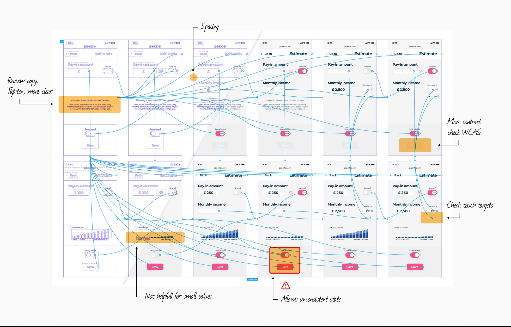
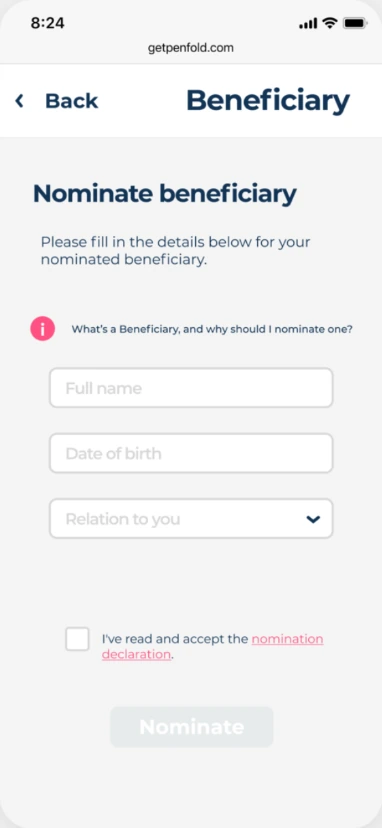
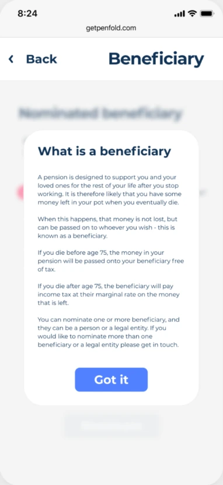
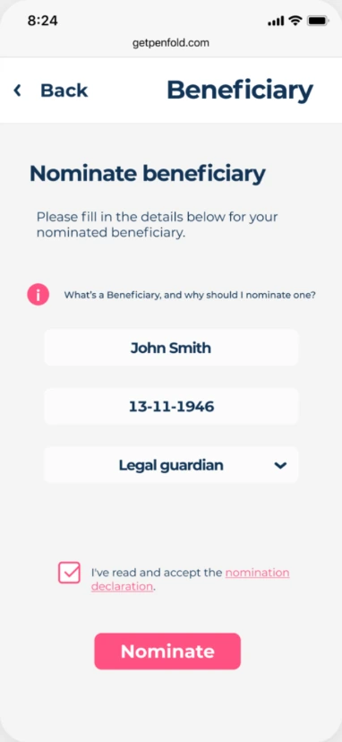
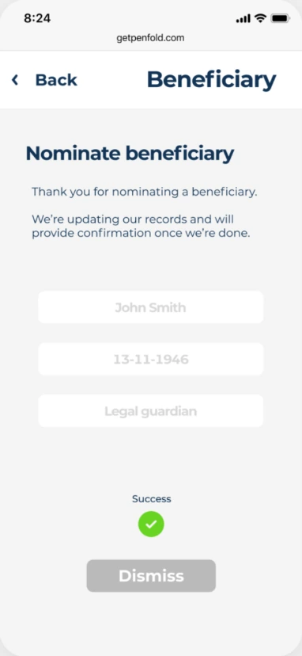

First hire, tasked with building the product from scratch, creating and introducing new concepts to the leadership team, testing, iterating, documenting and working closely with developers. Met daily with Customer Support to ensure focus on the right problems, and worked closely with Marketing, maturing the brand and advertising.

Research
Initial research, as well as bringing together all parts of the business was crucial in getting the first version off the ground. It allowed us to iterate fast, and expose the designs and ideas to users as quickly as possible, ensuring we moved quickly and swiftly with everyone aligned under the same vision and direction.
As a new product, we needed to make the right calls from the start to avoid spending development time on features that wouldn't impact our users and drive growth. Constantly reviewing bugs/crash logs as well as user sessions on FullStory was a great source of insight. Once the team grew, I extended that to weekly review sessions with Customer Service to make sure our pipeline was always aligned with real time user needs.
New opportunities would be prioritised against our sprint candidates as soon as we'd identify them, and urgent tweaks would be flagged and negotiated into the sprint.

User feedback
One of the challenges of working with a small team is weighting features not only by user impact, but also by internal impact as they may generate added burden to ops/customer service. An example was a feature that would allow users to nominate a legal beneficiary. Although it never came up in user interviews, it became a hot request once users actually signed up for the live service. Not a blockbuster, but something we could build quickly, and it:
Allowed us to ping back the users who had requested it saying "You asked for it, and here it is a week later" — always a nice touch
Added a level of trust to our service by making it more robust and "legal friendly"
Ultimately reduced the burden on CS requests for manual nominations, making the process fully automated, more reliable, and instant for the user.




Iterate from drop-off analysis
As the only product, growth was 100% dependent on how many users we could get through the funnel. We did drop-off analysis almost daily to ensure there was a clear focus on blockers — whatever caused most users leave without finishing onboarding had to be looked at. Because everything was built iteratively it was relatively easy to pick up on blockers and improve them. This allowed our development team to spend less than a day on most iterations and ship, without feeling overburdened or locked into a feature for days on end without being able to quickly focus on something else if needed. This allowed us to move make visible progress on all key areas of the product, essentially at the same time.
In a year, the platform went from single digit users to handling millions of pounds, and monthly double digit growth. We've also set up Trustpilot and Net Promoter Score to have a measure of customer happiness, and both have top scores with hundreds of independent reviews.
The platform has now been optimised for mobile and desktop web views, launched on the Play Store for Android, and soon available on the App Store as well.